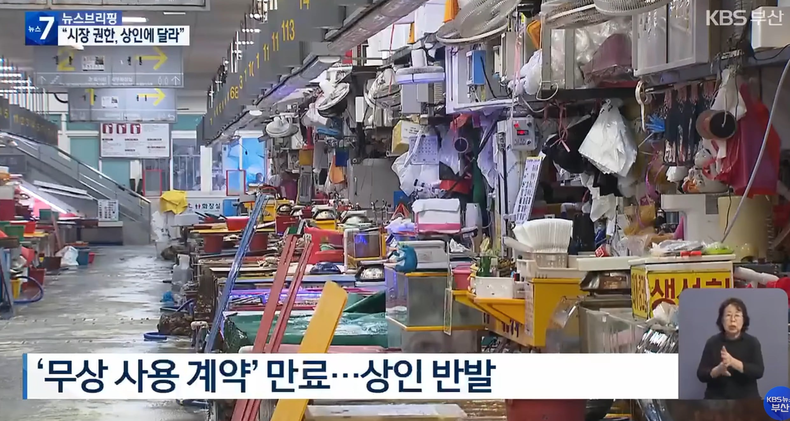
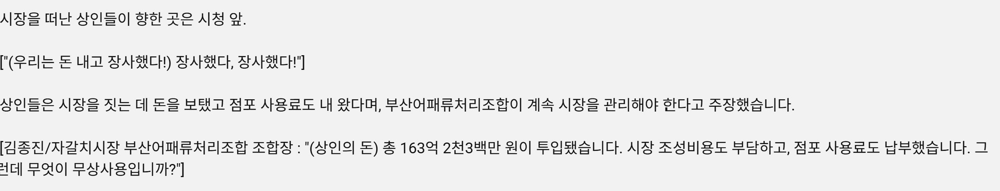

자갈치 시장 20년 무상사용 끝나고 이제 점포세 걷는다고함
그런데 상인들은 점포세를 냈다고함
중간에 누가 장난쳤나? ㅋㅋ


자갈치 시장 20년 무상사용 끝나고 이제 점포세 걷는다고함
그런데 상인들은 점포세를 냈다고함
중간에 누가 장난쳤나? ㅋㅋ
그러니깐 나도 이생각했는데 내고있던거면 계속 내면 되는건데
지금내는거말고 더내라는소리아님? 추가로 점포 요금 한개 더
이야기 들어보니까 지금 내는 점포세에 10분의 1가격만 받는다더라
늘 생각하는거지만 저긴 그냥 없어지는게 맞다고 본다
맞다.
오래 영업했으니 권리 내놔라는거지 뭐.
최초에 건축비 전액을 상인이 부담하고 시에 기부채납 해서 20년 무상 사용한거라서 저러는 거임.. 2000년 초에 100억이 넘게 들어갔으니깐 적은돈은 아니지. 그것도 민간에서
월세 안받다가 달라니까, 그동안 인건비, 관리비, 전기세 써가며 장사했다. 그게 월세 아니냐며 개소리 하는거랑 뭔 차이야.
누구 주머니로 들어간거지 ???
ㄴㄴㄴㄴ
세 안받고 20년 썼지만, 그동안 관리비도 내왔다~
딴 소리임
아이템매니아 과금내역서 들고와서 게임사 협박하는거
이해가 쏙쏙 되네 ㄹㅇ


일타강사네
이 비유 찰떡이다 한방에 이해했음
이해가 쏙쏙 되노 ㅋㅋㅋㅋㅋ
나라에 그지새끼들이 왜캐 많아 진짜
저거 자리먹은놈이 그동안 자리세 받으면서 다른 상인한테 대여해준거
그러니 돈냈다는사람이 나오는거지ㅋㅋ
이게 맞음
이것도 가능성 있을듯
20년간 모든 점포가 사람이 안바뀌지는 않았을테니
중간에 나간놈이 내가 이자리 주인이니 돈 받고 빌려주면 되는거 아닌가? 이런 인간 무조건 있을거
아니 가능성이 아니라 걍 대놓고 해옴
20년이면 짧은게 아니라 오히려 그런곳이 더 많을거임
20년간 관리했다고 소유권까지 있는게 아닐텐데
실제로 많은 나라에서 점유하고 관리했으면 소유권이 생기긴함 ㅋㅋㅋ 아 물론 이건 다른문제긴해 ㅋㅋㅋㅋㅋㅋㅋ
또시작이네
그동안 꿀빨아놓고
무지성 떼쓰기
점포세랑 자리세가 따로 돌았다는 건가
일단 무논리로 우기면 들어주니까 다들 이러는거
임대아파트 문제도 그렇고
함 가봤는데 좀 다르더라 포항 죽도시장은 좋았는데 저긴 걍 백화점 같음 가격도 그렇고
정찰제?
신도시 지을때도 무단토지사용해서 농사짓던 사람들 움막만든 사람들도 저러고 장기전세도 그렇고 오래 점유만 하면 뭐 큰거 한거마냥 구는거 진짜 꼴보기 싫음 ㅈㄴ 징징거리기만 하고 무단점유한 기간만큼 사용료 청구를 해야한다고 봄
저거 권리금 때문에 저러는 거임
ㅋㅋㅋ 점포세를 소유주에게 내야지 누구에게 낸거임..?
20년 장기전세랑 비슷한 느낌이네 ㅋㅋㅋㅋ
자리먹은놈 장사한놈 따로인가
집회 참여안하면 벌금 20만원 내놔라 함ㅋㅋ
전세집에 투자했다고 전세집이 내집이 되는게 아닌데?
가끔생각하는데 시민들이 대모하거나 시위하는건 뭐 그렇다쳐도
상인들 시위하는건 진압하는게 맞지않나? 당장 위법한거 투성이잖아.
자기가 사용한 물,전기세 이런거 관리비인거를 점포세 냈다고 주장하는건가
나라가 개좆된게 느껴진다 자꾸 선례를 만드니까 걍 드러누우면 말도안되는것도 다 들어주네 학습하고 이제는 자갈치시장 상인들까지 저지랄하네 ㅋㅋㅋㅋ 대단하다 시발ㅋㅋㅋㅋ
시장은 어느지역이던 진짜 쓰레기같네
경찰투입해서 저런놈들 진압하고 제대로 임대료를 내고 장사하는 사람들을 받아야지 ....
정상화 하는중인거지 지금까지 행정이 완벽하지않을때 들어온사람들이라 ㅋㅋㅋㅋ
ㅋㅋㅋㅋ 그러면 점포세 계속 내면 되잖아 ㅋㅋㅋㅋㅋㅋ